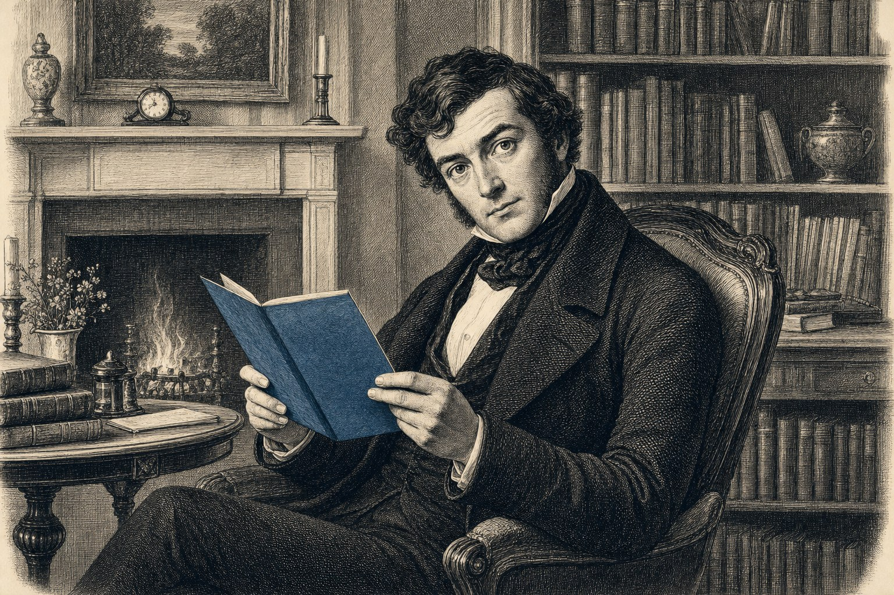

De eis aan de lezer
Wat u kunt doen met dit instrument — en waarom dát is wat de papier-industrie het minst kan dragen.
Slot · 5 min lezen

Aan het einde van deze krant ligt het instrument op tafel. U heeft drie dossiers gezien waarin de pers en het beleid de tweede en derde orde verheffen tot de eerste. U heeft drie mensen gezien die in een omgekeerde wereld toch het kompas behielden. U heeft vier diagrammen gezien die in één blik tonen wat een tekst in twintig minuten moet uitleggen.
Ik vraag u niets. Geen lidmaatschap, geen donatie, geen petitie, geen demonstratie. Het Open Vizier is gratis en blijft dat. Wat ik u vraag is iets wat alleen u kunt doen.
Lees morgen de krant met dit instrument in de hand. Schrijf in de marge welke orde voor welke wordt verkocht. Doe het bij elk artikel waar getallen in staan, bij elk artikel waar een actor wordt aangewezen, bij elk artikel waar een conclusie wordt getrokken. Vraag uzelf: is de hoofdfactor genoemd? Is de bijdrage van deze actor werkelijk eerste orde, of is hij naar de eerste orde verheven door framing? Welke factoren ontbreken die natuurkundig of statistisch hoger zouden moeten staan?
Doe dat een week lang. Misschien twee weken. Daarna is uw verhouding tot uw krant veranderd. U bent geen consument meer; u bent een lezer geworden. Een lezer die rangorde herkent.
Dit is wat een papier-industrie het minst kan dragen. Niet protest, niet boze brieven, niet petities. Een lezer die rekent. Een lezer die het rangorde-instinct heeft teruggevonden dat onze grootouders bezaten en wij hebben weggegooid.
U bent dat instrument. Ik heb het u alleen aangereikt.
Jacobus van Merksteijn Calvià, juli 2026
## Bronnen
Editie 5 staat op de schouders van anderen. De volgende publicaties zijn voor de cijfers en redeneringen in deze editie geraadpleegd:
- IPCC AR6, Global Warming Potential tabellen (2021–2024), met name het onderscheid tussen fossil en non-fossil methaan. - TNO-quickscan methaanemissies Nederland, gepubliceerd door SodM/EZK op 26 mei 2026. - Bette de Koning en Eva Rooijers, "Methaanregels beloven enorme klimaatwinst, maar bedreigen volgens gasbedrijven de Nederlandse gaswinning", Het Financieele Dagblad, 23 mei 2026. - Het Financieele Dagblad, "Verenigde Staten waarschuwen Europa over methaanregels", 20 mei 2026. - Europese Commissie, "Commission future-proofs Natura 2000 against climate change", richtsnoer van 25 maart 2026. - STOWA, deltafact Effecten klimaatverandering op terrestrische natuur. - OBN, Droogte ingrijpend voor natuur in hoog Nederland (2021). - Natura 2000 Herstelstrategieën, Intermezzo I. - Raad van State, uitspraak van 29 mei 2019, ECLI:NL:RVS:2019:1603, betreffende het Programma Aanpak Stikstof. - Kaoru Ishikawa, Guide to Quality Control (Asian Productivity Organization, 1968). - Joseph M. Juran, Quality Control Handbook (McGraw-Hill, 1951 en latere edities), voor het Pareto-principe in kwaliteitsbeheersing.
Voor de portretten in artikel 04 zijn de onderliggende journalistieke bronnen daar onderaan elk portret apart vermeld.
Aan het einde van deze krant ligt het instrument op tafel. U heeft drie dossiers gezien waarin de pers en het beleid de tweede en derde orde verheffen tot de eerste. U heeft drie mensen gezien die in een omgekeerde wereld toch het kompas behielden. U heeft vier diagrammen gezien die in één blik tonen wat een tekst in twintig minuten moet uitleggen.
Ik vraag u niets. Geen lidmaatschap, geen donatie, geen petitie, geen demonstratie. Het Open Vizier is gratis en blijft dat. Wat ik u vraag is iets wat alleen u kunt doen.
Lees morgen de krant met dit instrument in de hand. Schrijf in de marge welke orde voor welke wordt verkocht. Doe het bij elk artikel waar getallen in staan, bij elk artikel waar een actor wordt aangewezen, bij elk artikel waar een conclusie wordt getrokken. Vraag uzelf: is de hoofdfactor genoemd? Is de bijdrage van deze actor werkelijk eerste orde, of is hij naar de eerste orde verheven door framing? Welke factoren ontbreken die natuurkundig of statistisch hoger zouden moeten staan?
Doe dat een week lang. Misschien twee weken. Daarna is uw verhouding tot uw krant veranderd. U bent geen consument meer; u bent een lezer geworden. Een lezer die rangorde herkent.
Dit is wat een papier-industrie het minst kan dragen. Niet protest, niet boze brieven, niet petities. Een lezer die rekent. Een lezer die het rangorde-instinct heeft teruggevonden dat onze grootouders bezaten en wij hebben weggegooid.
U bent dat instrument. Ik heb het u alleen aangereikt.
Jacobus van Merksteijn Calvià, juli 2026
## Bronnen
Editie 5 staat op de schouders van anderen. De volgende publicaties zijn voor de cijfers en redeneringen in deze editie geraadpleegd:
- IPCC AR6, Global Warming Potential tabellen (2021–2024), met name het onderscheid tussen fossil en non-fossil methaan. - TNO-quickscan methaanemissies Nederland, gepubliceerd door SodM/EZK op 26 mei 2026. - Bette de Koning en Eva Rooijers, "Methaanregels beloven enorme klimaatwinst, maar bedreigen volgens gasbedrijven de Nederlandse gaswinning", Het Financieele Dagblad, 23 mei 2026. - Het Financieele Dagblad, "Verenigde Staten waarschuwen Europa over methaanregels", 20 mei 2026. - Europese Commissie, "Commission future-proofs Natura 2000 against climate change", richtsnoer van 25 maart 2026. - STOWA, deltafact Effecten klimaatverandering op terrestrische natuur. - OBN, Droogte ingrijpend voor natuur in hoog Nederland (2021). - Natura 2000 Herstelstrategieën, Intermezzo I. - Raad van State, uitspraak van 29 mei 2019, ECLI:NL:RVS:2019:1603, betreffende het Programma Aanpak Stikstof. - Kaoru Ishikawa, Guide to Quality Control (Asian Productivity Organization, 1968). - Joseph M. Juran, Quality Control Handbook (McGraw-Hill, 1951 en latere edities), voor het Pareto-principe in kwaliteitsbeheersing.
Voor de portretten in artikel 04 zijn de onderliggende journalistieke bronnen daar onderaan elk portret apart vermeld.